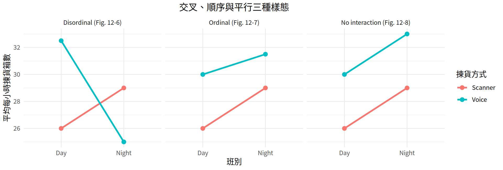

[1] 4.256495統計學
第12章：變異數分析
劉昱佑
實踐大學
2026-09-20
本章概覽
第12章介紹變異數分析（ANOVA）——一種透過比較同一母體變異數的兩個估計值，來比較三個或三個以上平均數的 F 檢定。
| Section | Topics |
|---|---|
| 12-1 | 單因子 ANOVA；為何不用多次 t 檢定；F = s_B^2 / s_W^2；d.f.N. = k-1、d.f.D. = N-k；摘要表 |
| 12-2 | Scheffé 檢定與 F' = (k-1)(C.V.)；Tukey 的 q 檢定；Bonferroni 校正；三者的取捨 |
| 12-3 | 二因子 ANOVA；因子、水準與處理組；主效果與交互作用；順序型與非順序型 |
本章學習目標
讀完本章後，你應該能夠
- 使用單因子 ANOVA 技術，判斷三個或三個以上平均數之間是否有顯著差異。
- 當 ANOVA 拒絕虛無假設時，使用 Scheffé、Tukey 或 Bonferroni 檢定找出哪些平均數不同。
- 使用二因子 ANOVA 技術，判斷主效果或交互作用是否有顯著差異。
導論
第9章用來比較兩個變異數的 F 檢定，也可以用來比較三個或三個以上的平均數，這項技術稱為變異數分析，簡稱 ANOVA。
比較三個或三個以上平均數時，不應使用 z 檢定或 t 檢定。對三組資料而言，F 檢定只能顯示這三個平均數之間是否存在差異，卻無法指出差異落在何處——是 \bar{X}_1 與 \bar{X}_2、\bar{X}_1 與 \bar{X}_3，還是 \bar{X}_2 與 \bar{X}_3。要找出差異所在，必須使用 Scheffé、Tukey 或 Bonferroni 等檢定。
單因子與二因子 ANOVA
用來比較三個或三個以上平均數的變異數分析稱為單因子變異數分析，因為其中只涉及一個變數。若研究涉及兩個變數，則使用二因子變異數分析（第12-3節）。
第12-1節：單因子變異數分析
變異數分析
單因子變異數分析
單因子變異數分析檢定利用樣本變異數，檢定三個或三個以上平均數是否相等。
之所以稱為單因子，是因為研究中只有一個自變數用來區分不同的母體。這個自變數也稱為因子。
為何不使用多次 t 檢定？
乍看之下，似乎可以每次取兩個平均數、用多次 t 檢定來比較三個以上的樣本平均數。但有三個理由說明不該這樣做。
三個理由
- 忽略了其他平均數。 每次只比較兩個平均數時，其餘的平均數都被忽略；而 F 檢定則同時比較所有平均數。
- 第一型錯誤率上升。 進行的 t 檢定愈多，純粹因機遇而得到顯著差異的可能性就愈大，因此拒絕正確虛無假設的機率隨之上升。待比較的母體數目愈多，在給定 \alpha 下犯第一型錯誤的機率也愈高。
- 檢定次數暴增。 3 個平均數兩兩比較需要 3 次 t 檢定；5 個平均數需要 10 次；10 個平均數需要 45 次。
F 分配的特性
回顧第9章
- F 值不可能為負，因為變異數恆為正數或零。
- 此分配為右偏。
- F 的平均值約等於 1。
- F 分配是一族曲線，取決於分子變異數的自由度與分母變異數的自由度。
雖然比較的是三個以上的平均數，檢定中使用的卻是變異數。
母體變異數的兩個估計值
組間變異數與組內變異數
組間變異數是母體變異數的第一個估計值，做法是求各平均數的變異數。
組內變異數是第二個估計值，做法是使用全部資料計算變異數，不受各平均數差異的影響。
母體變異數的兩個估計值（續）
- 若各平均數沒有差異，組間估計值會與組內估計值大致相等，F 檢定統計量約為 1，不拒絕 H_0。
- 若各平均數有顯著差異，組間變異數會遠大於組內變異數，F 明顯大於 1，拒絕 H_0。
F = \frac{\text{variance between groups}}{\text{variance within groups}}
F 檢定的公式
總平均數、s_B^2 與 s_W^2
總平均數 \bar{X}_{GM} 是所有樣本中全部數值的平均數：
\bar{X}_{GM} = \frac{\sum X}{N}
組間變異數是以樣本數為權重、各平均數之間的變異數：
s_B^2 = \frac{\sum n_i (\bar{X}_i - \bar{X}_{GM})^2}{k - 1}
組內變異數是各樣本變異數的加權平均，不涉及平均數之間的差：
s_W^2 = \frac{\sum (n_i - 1) s_i^2}{\sum (n_i - 1)}
其中 k 為組數，n_i 為樣本數，\bar{X}_i 為樣本平均數，s_i^2 為樣本變異數。
F 檢定統計量
單因子變異數分析的 F 檢定公式
F = \frac{s_B^2}{s_W^2}
其中 s_B^2 為組間變異數，s_W^2 為組內變異數。
ANOVA 的假設
H_0: \mu_1 = \mu_2 = \cdots = \mu_k H_1: \text{At least one mean is different from the others}
檢定統計量顯著，代表平均數的這項差異極可能不是機遇造成的，但它並不指出差異落在何處。
自由度
d.f.N. 與 d.f.D.
d.f.N. = k - 1 \qquad d.f.D. = N - k
其中 k 為組數，N = n_1 + n_2 + \cdots + n_k 為各樣本數之和。
各組樣本數不必相等。用於比較平均數的 F 檢定永遠是右尾檢定。
表 12-1：變異數分析摘要表
表 12-1 — 變異數分析摘要表
| Source | Sum of squares | d.f. | Mean square | F |
|---|---|---|---|---|
| Between groups | SSB | k-1 | MSB | |
| Within groups (error) | SSW | N-k | MSW | |
| Total |
SSB = \sum n_i (\bar{X}_i - \bar{X}_{GM})^2 \qquad SSW = \sum (n_i - 1) s_i^2
MSB = s_B^2 = \frac{SSB}{k-1} \qquad MSW = s_W^2 = \frac{SSW}{N-k} \qquad F = \frac{s_B^2}{s_W^2} = \frac{MSB}{MSW}
SSB 為組間平方和，SSW 為組內平方和（即誤差平方和），MSB 與 MSW 稱為均方。
F 檢定的假設條件
比較三個或三個以上平均數的 F 檢定假設條件
- 抽取樣本的母體必須服從常態分配或近似常態分配。
- 各樣本之間必須相互獨立。
- 各母體的變異數必須相等。
- 各樣本必須是簡單隨機樣本，每個母體各取一個。
本書在習題中會直接載明這些假設；但在其他情境下遇到統計問題時，必須先確認這些假設成立才能進行分析。
程序表
求變異數分析的 F 檢定統計量
步驟 1. 求各樣本的平均數與變異數：(\bar{X}_1, s_1^2), (\bar{X}_2, s_2^2), \ldots, (\bar{X}_k, s_k^2)。
步驟 2. 求總平均數：\bar{X}_{GM} = \dfrac{\sum X}{N}。
步驟 3. 求組間變異數：s_B^2 = \dfrac{\sum n_i (\bar{X}_i - \bar{X}_{GM})^2}{k-1}。
步驟 4. 求組內變異數：s_W^2 = \dfrac{\sum (n_i - 1)s_i^2}{\sum (n_i - 1)}。
步驟 5. 求 F 檢定統計量：F = \dfrac{s_B^2}{s_W^2}，其中 d.f.N. = k-1、d.f.D. = N-k。
五個步驟
單因子 ANOVA 依循一般的假設檢定程序
步驟 1. 陳述假設。
步驟 2. 求臨界值。
步驟 3. 計算檢定統計量。
步驟 4. 做成決策。
步驟 5. 總結結果。
範例 12-1
範例 12-1
解題
步驟 1. 陳述假設並指出主張。
H_0: \mu_1 = \mu_2 = \mu_3 \ \textit{(claim)} H_1: \text{At least one mean is different from the others}
步驟 2. 求臨界值。由 N = 12、k = 3，
d.f.N. = k - 1 = 3 - 1 = 2 \qquad d.f.D. = N - k = 12 - 3 = 9
在 \alpha = 0.05 下，附表 A-7 的臨界值為 4.26。
範例 12-1
解題
步驟 3a-b — 各組統計量與總平均數
mrt_kiosks <- c(81, 75, 68, 64)
campus <- c(76, 68, 64, 60, 57)
suburban <- c(60, 51, 45)
revenue <- data.frame(
daily_revenue = c(mrt_kiosks, campus, suburban),
store_format = factor(rep(c("MRT", "Campus", "Suburban"), c(4, 5, 3)),
levels = c("MRT", "Campus", "Suburban"))
)
format_stats <- revenue |>
group_by(store_format) |>
summarise(n = n(), mean = mean(daily_revenue), variance = var(daily_revenue))
knitr::kable(format_stats, align = "c", digits = 3)| store_format | n | mean | variance |
|---|---|---|---|
| MRT | 4 | 72 | 56.667 |
| Campus | 5 | 65 | 55.000 |
| Suburban | 3 | 52 | 57.000 |
[1] 64.08333範例 12-1
解題
步驟 3c-e — 兩個變異數估計值與 F
s_B^2 = \frac{4(72 - 64.083)^2 + 5(65 - 64.083)^2 + 3(52 - 64.083)^2}{3-1} = \frac{692.917}{2} = 346.458
s_W^2 = \frac{(4-1)(56.667) + (5-1)(55) + (3-1)(57)}{(4-1)+(5-1)+(3-1)} = \frac{504}{9} = 56
F = \frac{s_B^2}{s_W^2} = \frac{346.458}{56} = 6.187
between within F
346.458 56.000 6.187 [1] 346.4583 56.0000範例 12-1
範例 12-1
解題
表 12-2 — 範例 12-1 的變異數分析摘要表
| Source | Sum of squares | d.f. | Mean square | F |
|---|---|---|---|---|
| Between groups | 692.917 | 2 | 346.458 | 6.187 |
| Within groups (error) | 504.000 | 9 | 56.000 | |
| Total | 1196.917 | 11 |
在附表 A-7 中，當 d.f.N. = 2、d.f.D. = 9 時，檢定統計量 6.187 落在 \alpha = 0.025 的 5.71 與 \alpha = 0.01 的 8.02 之間，因此 0.01 < \text{P-value} < 0.025，在 \alpha = 0.05 下拒絕 H_0。
範例 12-1
範例 12-2
各承運商的運送時間
台灣某出口商的物流團隊想知道，貨物由桃園送到東南亞集貨中心的門到門運送時間，在三家承運商之間是否有差異。三家承運商各隨機抽取 6 筆近期出貨，記錄運送時間（小時）如下。在 \alpha = 0.05 下，是否可以下結論說三家承運商的平均運送時間有顯著差異？
Carrier A Carrier B Carrier C
53 46 62
50 45 56
48 42 54
45 38 50
42 36 47
38 33 43（模擬資料）
回到 範例 12-4
範例 12-2
解題
步驟 1. 陳述假設並指出主張。
H_0: \mu_1 = \mu_2 = \mu_3 H_1: \text{At least one mean is different from the others} \ \textit{(claim)}
步驟 2. 求臨界值。由 k = 3、N = 18、\alpha = 0.05，
d.f.N. = k - 1 = 2 \qquad d.f.D. = N - k = 18 - 3 = 15
臨界值為 3.68。
範例 12-2
解題
步驟 3a-b — 各組統計量與總平均數
carrier_a <- c(53, 50, 48, 45, 42, 38)
carrier_b <- c(46, 45, 42, 38, 36, 33)
carrier_c <- c(62, 56, 54, 50, 47, 43)
transit <- data.frame(
transit_hours = c(carrier_a, carrier_b, carrier_c),
carrier = factor(rep(c("Carrier A", "Carrier B", "Carrier C"), each = 6))
)
carrier_stats <- transit |>
group_by(carrier) |>
summarise(n = n(), mean = mean(transit_hours), variance = var(transit_hours))
knitr::kable(carrier_stats, align = "c", digits = 2)| carrier | n | mean | variance |
|---|---|---|---|
| Carrier A | 6 | 46 | 30.0 |
| Carrier B | 6 | 40 | 26.8 |
| Carrier C | 6 | 52 | 46.0 |
[1] 46範例 12-2
解題
步驟 3c-e — 兩個變異數估計值與 F
s_B^2 = \frac{6(46-46)^2 + 6(40-46)^2 + 6(52-46)^2}{3-1} = \frac{432}{2} = 216
s_W^2 = \frac{5(30) + 5(26.8) + 5(46)}{5+5+5} = \frac{514}{15} = 34.267
F = \frac{216}{34.267} = 6.304
步驟 4-5. 由於 6.304 > 3.68，拒絕 H_0：有足夠證據支持「至少有一個平均數與其他平均數不同」。
transit_between_var <- sum(carrier_stats$n *
(carrier_stats$mean - transit_grand_mean)^2) / (3 - 1)
transit_within_var <- sum((carrier_stats$n - 1) * carrier_stats$variance) / (18 - 3)
round(c(between = transit_between_var, within = transit_within_var,
F = transit_between_var / transit_within_var), 3)between within F
216.000 34.267 6.304 [1] 216.00000 34.26667範例 12-2
解題
表 12-3 — 範例 12-2 的變異數分析摘要表
| Source | Sum of squares | d.f. | Mean square | F |
|---|---|---|---|---|
| Between groups | 432.000 | 2 | 216.000 | 6.304 |
| Within groups (error) | 514.000 | 15 | 34.267 | |
| Total | 946.000 | 17 |
在附表 A-7 中，6.304 落在 \alpha = 0.025 的 4.77 與 \alpha = 0.01 的 6.36 之間，因此 0.01 < \text{P-value} < 0.025，拒絕 H_0。
範例 12-2
F 檢定之後
注意
ANOVA 拒絕虛無假設時，只代表至少有一個平均數與其他平均數不同。要找出差異落在哪些平均數之間，必須再使用 Tukey、Scheffé 或 Bonferroni 等檢定。
第12-2節：Scheffé 檢定、Tukey 檢定與 Bonferroni 檢定
找出差異所在
當 F 檢定拒絕虛無假設時，研究者往往想知道差異落在何處。統計學家發展出數種方法，用來在 ANOVA 之後判定顯著差異的所在，其中最常用的是 Scheffé 檢定、Tukey 檢定與 Bonferroni 檢定。
進行 Scheffé 檢定時，必須就所有可能的組合，每次取兩個平均數互相比較。例如有三個平均數時，須進行的比較為
\bar{X}_1 \text{ versus } \bar{X}_2 \qquad \bar{X}_1 \text{ versus } \bar{X}_3 \qquad \bar{X}_2 \text{ versus } \bar{X}_3
Scheffé 檢定
Scheffé 檢定統計量公式
F_S = \frac{(\bar{X}_i - \bar{X}_j)^2}{s_W^2 \left[ (1/n_i) + (1/n_j) \right]}
其中 \bar{X}_i 與 \bar{X}_j 為所比較樣本的平均數，n_i 與 n_j 為對應的樣本數，s_W^2 為組內變異數。
Scheffé 檢定的臨界值 F' 是把 F 檢定的臨界值乘以 k - 1：
F' = (k - 1)(C.V.)
當 F_S > F' 時，所比較的兩個平均數之間有顯著差異。
範例 12-3
對店型營收資料進行 Scheffé 檢定
對 範例 12-1 中的每一對平均數進行 Scheffé 檢定，判斷各對平均數之間是否存在顯著差異。使用 \alpha = 0.05。
已知 \bar{X}_1 = 72 (n_1 = 4)、\bar{X}_2 = 65 (n_2 = 5)、\bar{X}_3 = 52 (n_3 = 3)，且 s_W^2 = 56。
範例 12-3
解題
範例 12-1 的 F 臨界值為 4.256，附表 A-7 取為 4.26。在 d.f.N. = 2、d.f.D. = 9 下，個別比較的臨界值為
F' = (k-1)(C.V.) = (3-1)(4.256) = 8.513
a. \bar{X}_1 對 \bar{X}_2：F_S = \dfrac{(72 - 65)^2}{56 \left( \frac{1}{4} + \frac{1}{5} \right)} = 1.944。由於 1.944 < 8.513，\mu_1 與 \mu_2 沒有顯著差異。
b. \bar{X}_1 對 \bar{X}_3：F_S = \dfrac{(72 - 52)^2}{56 \left( \frac{1}{4} + \frac{1}{3} \right)} = 12.245。由於 12.245 > 8.513，\mu_1 與 \mu_3 有顯著差異。
c. \bar{X}_2 對 \bar{X}_3：F_S = \dfrac{(65 - 52)^2}{56 \left( \frac{1}{5} + \frac{1}{3} \right)} = 5.658。由於 5.658 < 8.513，\mu_2 與 \mu_3 沒有顯著差異。
因此只有捷運站店的平均營收與郊區店的平均營收有顯著差異。
範例 12-3
解題
以 R 進行相同的檢定
scheffe_f <- function(i, j) {
mean_gap <- format_stats$mean[i] - format_stats$mean[j]
mean_gap^2 / (within_var * (1 / format_stats$n[i] + 1 / format_stats$n[j]))
}
scheffe_cv <- (3 - 1) * qf(0.95, df1 = 2, df2 = 9)
data.frame(
comparison = c("MRT vs Campus", "MRT vs Suburban", "Campus vs Suburban"),
Fs = round(c(scheffe_f(1, 2), scheffe_f(1, 3), scheffe_f(2, 3)), 3)
) |>
mutate(decision = if_else(Fs > scheffe_cv, "significant", "not significant")) |>
knitr::kable(align = "c")| comparison | Fs | decision |
|---|---|---|
| MRT vs Campus | 1.944 | not significant |
| MRT vs Suburban | 12.245 | significant |
| Campus vs Suburban | 5.658 | not significant |
[1] 8.513關於 Scheffé 檢定的補充
注意
有時候即使 F 檢定統計量大於臨界值，Scheffé 檢定仍可能找不到任何一對顯著不同的平均數。這是因為差異其實可能落在「兩個以上平均數的平均」與另一個平均數之間。Scheffé 檢定可以做這類比較，但其技術已超出本書範圍。
Tukey 檢定
在完成變異數分析之後，若各組樣本數相同，也可以使用 Tukey 檢定進行平均數的兩兩比較。Tukey 檢定的檢定統計量符號為 q。
Tukey 檢定公式
q = \frac{\bar{X}_i - \bar{X}_j}{\sqrt{s_W^2 / n}}
其中 \bar{X}_i 與 \bar{X}_j 為所比較樣本的平均數，n 為共同的樣本數，s_W^2 為組內變異數。
當 q 的絕對值大於 Tukey 檢定的臨界值時，所比較的兩個平均數之間有顯著差異。
臨界值查附表 A-9：k 為原問題中的平均數個數（查最上一列），v = N - k 為 s_W^2 的自由度（查最左一欄）。
範例 12-4
對承運商運送時間資料進行 Tukey 檢定
在 \alpha = 0.05 下，以 Tukey 檢定檢驗 範例 12-2 中的每一對平均數，判斷何處存在差異。
已知 \bar{X}_1 = 46（承運商 A）、\bar{X}_2 = 40（承運商 B）、\bar{X}_3 = 52（承運商 C）、s_W^2 = 34.267，且 n = 6。
範例 12-4
解題
a. \bar{X}_1 對 \bar{X}_2：q = \dfrac{46 - 40}{\sqrt{34.267/6}} = 2.511
b. \bar{X}_1 對 \bar{X}_3：q = \dfrac{46 - 52}{\sqrt{34.267/6}} = -2.511
c. \bar{X}_2 對 \bar{X}_3：q = \dfrac{40 - 52}{\sqrt{34.267/6}} = -5.021
由於 k = 3、d.f. = 18 - 3 = 15、\alpha = 0.05，附表 A-9 的臨界值為 3.67。唯一絕對值大於臨界值的 q 值是 \bar{X}_2 與 \bar{X}_3 的差異。結論是承運商 B 與承運商 C 的平均運送時間有顯著差異。
範例 12-4
解題
以 R 進行相同的檢定
| comparison | q |
|---|---|
| A vs B | 2.511 |
| A vs C | -2.511 |
| B vs C | -5.021 |
[1] 3.673範例 12-4
解題
Tukey 的誠實顯著差異（HSD）
Tukey multiple comparisons of means
95% family-wise confidence level
Fit: aov(formula = transit_hours ~ carrier, data = transit)
$carrier
diff lwr upr p adj
Carrier B-Carrier A -6 -14.778613 2.778613 0.2112790
Carrier C-Carrier A 6 -2.778613 14.778613 0.2112790
Carrier C-Carrier B 12 3.221387 20.778613 0.0076917只有承運商 C 與承運商 B 這一對的調整後 P 值小於 0.05，與手算結果一致。
範例 12-4
Bonferroni 檢定
Bonferroni 檢定使用 t 檢定，但會調整臨界值與 P 值，以克服「檢定次數增加導致顯著水準上升」的問題。
Bonferroni 檢定統計量公式
t = \frac{\bar{X}_i - \bar{X}_j}{\sqrt{s_W^2 \left( \dfrac{1}{n_i} + \dfrac{1}{n_j} \right)}} \qquad \text{with } d.f. = N - k
其中 \bar{X}_i 與 \bar{X}_j 為所比較樣本的平均數，n_i 與 n_j 為對應的樣本數，N 為研究中的總人數（或總個數），k 為組數。
Bonferroni 的調整
調整顯著水準與 P 值
臨界值的調整方式是把 \alpha 除以兩兩配對的組合數 _kC_2。若有 3 個平均數，_3C_2 = 3 次比較，故 \alpha 除以 3；若有 4 個平均數，_4C_2 = 6 次比較，故 \alpha 除以 6。
至於 P 值，則是把單次比較兩個平均數所得的 P 值乘以配對組合數 _kC_2。P 值不可能超過 1，因此調整後大於 1 的值一律記為 1。
範例 12-5
對店型營收資料進行 Bonferroni 檢定
在 \alpha = 0.05 下，以 Bonferroni 檢定比較 範例 12-1 中的每一對平均數。
已知 \bar{X}_1 = 72 (n_1 = 4)、\bar{X}_2 = 65 (n_2 = 5)、\bar{X}_3 = 52 (n_3 = 3)、s_W^2 = 56、N = 12、k = 3，故 d.f. = 12 - 3 = 9。
範例 12-5
解題
a. H_0: \mu_1 = \mu_2。\ t = \dfrac{72 - 65}{\sqrt{56 \left( \frac{1}{4} + \frac{1}{5} \right)}} = \dfrac{7}{5.020} = 1.394
d.f. = 9 時 t = 1.394 的 P 值為 0.1966，調整後為 0.1966 \times 3 = 0.5899。不拒絕 H_0。
b. H_0: \mu_1 = \mu_3。\ t = \dfrac{72 - 52}{\sqrt{56 \left( \frac{1}{4} + \frac{1}{3} \right)}} = \dfrac{20}{5.715} = 3.499
P 值為 0.0067，調整後為 0.0067 \times 3 = 0.0202。由於 0.0202 < 0.05，拒絕 H_0。
c. H_0: \mu_2 = \mu_3。\ t = \dfrac{65 - 52}{\sqrt{56 \left( \frac{1}{5} + \frac{1}{3} \right)}} = \dfrac{13}{5.465} = 2.379
P 值為 0.0413，調整後為 0.0413 \times 3 = 0.1239，並未小於 \alpha = 0.05。不拒絕 H_0。
範例 12-5
解題
以 R 進行相同的檢定
bonferroni_t <- function(i, j) {
mean_gap <- format_stats$mean[i] - format_stats$mean[j]
mean_gap / sqrt(within_var * (1 / format_stats$n[i] + 1 / format_stats$n[j]))
}
t_values <- c(bonferroni_t(1, 2), bonferroni_t(1, 3), bonferroni_t(2, 3))
p_values <- 2 * pt(-abs(t_values), df = 9)
data.frame(
comparison = c("MRT vs Campus", "MRT vs Suburban", "Campus vs Suburban"),
t = round(t_values, 3),
p_single = round(p_values, 4),
p_adjusted = round(pmin(1, 3 * p_values), 4)
) |>
knitr::kable(align = "c")| comparison | t | p_single | p_adjusted |
|---|---|---|---|
| MRT vs Campus | 1.394 | 0.1966 | 0.5899 |
| MRT vs Suburban | 3.499 | 0.0067 | 0.0202 |
| Campus vs Suburban | 2.379 | 0.0413 | 0.1239 |
範例 12-5
解題
使用 pairwise.t.test
Pairwise comparisons using t tests with pooled SD
data: revenue$daily_revenue and revenue$store_format
MRT Campus
Campus 0.59 -
Suburban 0.02 0.12
P value adjustment method: bonferroni 調整後的 P 值為 0.59、0.02 與 0.12，與手算得到的決策相同。
此處使用 P 值，是因為調整後的 \alpha 為 0.05 \div 3 = 0.017，而自由度 9、\alpha = 0.017 的臨界 t 值無法直接從附表 A-5 查得。
應該使用哪一種檢定？
三種檢定的取捨
- Scheffé 檢定最一般化。樣本數不同時也可使用，而且能比較例如 \bar{X}_1 與 \bar{X}_2 的平均和 \bar{X}_3 之間的差異。
- Tukey 檢定在兩兩比較平均數時比 Scheffé 檢定更有檢定力，但要求各組樣本數相等。
- 兩兩比較的經驗法則：樣本數相等時用 Tukey 檢定，樣本數不等時用 Scheffé 檢定。本書遵循這項法則。
- 由於臨界值的調整方式不同，且當檢定統計量接近臨界值時，三種檢定的結果可能不一致。統計學家對於該用哪一種檢定並無共識；應採用該研究所屬學術領域慣用的檢定。
在範例 12-3 與範例 12-5 中，Scheffé 檢定與 Bonferroni 檢定都找出 \mu_1 與 \mu_3 之間的差異。
第12-3節：二因子變異數分析
二因子變異數分析
二因子 ANOVA
二因子 ANOVA 是單因子變異數分析的延伸，涉及兩個自變數。這些自變數也稱為因子。
在使用二因子變異數分析的研究中，研究者可以檢定兩個自變數（因子）對一個依變數的效果；此外，還可以檢定兩個變數的交互作用效果。
二因子變異數分析相當複雜，這裡僅作簡要介紹。
處理組
假設研究者想檢定兩種植物營養劑（A_1、A_2）與兩種土壤（I、II）對植物生長的影響，其他因素如水分、溫度與日照皆保持固定。於是設置四組植物（圖 12-4）。
圖 12-4 — 營養劑與土壤實驗的處理組
| Plant food | Soil type I | Soil type II |
|---|---|---|
| A_1 | 第1組：營養劑 A_1、土壤 I | 第2組：營養劑 A_1、土壤 II |
| A_2 | 第3組：營養劑 A_2、土壤 I | 第4組：營養劑 A_2、土壤 II |
二因子 ANOVA 中的各組稱為處理組。植物隨機分派到各組。這樣的設計稱為 2 \times 2 設計，因為每個變數都有兩個水準，也就是兩種不同的處理。
其他二因子設計
圖 12-5 — 幾種二因子 ANOVA 設計
| Design | Rows (variable A) | Columns (variable B) |
|---|---|---|
| 3 \times 2 | 3 個水準 | 2 個水準 |
| 3 \times 3 | 3 個水準 | 3 個水準 |
| 4 \times 3 | 4 個水準 | 3 個水準 |
依兩個變數水準數的不同，二因子 ANOVA 有許多不同的設計。
二因子 ANOVA 讓研究者能在單一實驗中同時檢定營養劑與土壤的效果，而不必分別做「只看營養劑」與「只看土壤」兩個實驗。
主效果與交互作用
主效果
某因子的效果是指改變該因子的水準或類型時，反應變數所產生的變化。兩個自變數的這兩種效果稱為主效果。
交互作用效果
交互作用效果代表兩個因子在各自單獨效果之外所產生的聯合效果——也就是說，不同類型的營養劑在不同土壤中對植物生長的影響並不相同。
當交互作用效果達到統計顯著時，研究者不應在未考慮交互作用效果的情況下，單獨解讀個別因子的效果。
三組假設
二因子 ANOVA 設計有數個虛無假設：每個自變數一個，交互作用一個。以營養劑與土壤的問題為例：
假設
1. 營養劑（因子 A）。
H_0：使用不同營養劑所種植物的平均高度沒有差異。
H_1：使用不同營養劑所種植物的平均高度有差異。
2. 土壤（因子 B）。
H_0：在不同土壤中所種植物的平均高度沒有差異。
H_1：在不同土壤中所種植物的平均高度有差異。
3. 交互作用。
H_0：所用營養劑的類型與土壤的類型，對植物生長沒有交互作用效果。
H_1：營養劑類型與土壤類型對植物生長有交互作用效果。
表 12-5：二因子 ANOVA 摘要表
與單因子 ANOVA 一樣，二因子 ANOVA 也會計算組間變異數估計值與組內變異數估計值，並對每個自變數與交互作用各進行一次 F 檢定。
表 12-5 — ANOVA 摘要表
| Source | Sum of squares | d.f. | Mean square | F |
|---|---|---|---|---|
| Row factor A | SS_A | a-1 | MS_A | F_A |
| Column factor B | SS_B | b-1 | MS_B | F_B |
| Interaction A \times B | SS_{A \times B} | (a-1)(b-1) | MS_{A \times B} | F_{A \times B} |
| Within (error) | SS_W | ab(n-1) | MS_W | |
| Total | SS_{\text{Total}} | N-1 |
其中 a 為因子 A 的水準數，b 為因子 B 的水準數，n 為每組的個數。
二因子 ANOVA 的公式
均方與 F 比值
MS_A = \frac{SS_A}{a-1} \qquad F_A = \frac{MS_A}{MS_W}, \quad d.f.N. = a-1, \ d.f.D. = ab(n-1)
MS_B = \frac{SS_B}{b-1} \qquad F_B = \frac{MS_B}{MS_W}, \quad d.f.N. = b-1, \ d.f.D. = ab(n-1)
MS_{A \times B} = \frac{SS_{A \times B}}{(a-1)(b-1)} \qquad F_{A \times B} = \frac{MS_{A \times B}}{MS_W}, \quad d.f.N. = (a-1)(b-1), \ d.f.D. = ab(n-1)
MS_W = \frac{SS_W}{ab(n-1)}
二因子 ANOVA 的假設條件
假設條件
- 抽取樣本的母體必須服從常態分配或近似常態分配。
- 各樣本必須相互獨立。
- 抽取樣本的各母體變異數必須相等。
- 各組的樣本數必須相等。
這些假設與單因子 ANOVA 相同，只有樣本數這一項例外——二因子 ANOVA 要求各組樣本數相等。二因子變異數分析同樣依循五個步驟的假設檢定程序。
平方和的計算過程相當冗長，因此範例 12-6 省略計算細節，只呈現二因子 ANOVA 摘要表。
範例 12-6
揀貨效率：揀貨方式與班別
桃園某物流中心的營運主管想知道，揀貨方式與班別是否會影響揀貨效率。揀貨方式有手持掃描器與語音揀貨兩種，班別有日班與夜班兩種，每一種組合各安排 2 名揀貨員，合計 8 名，並記錄每小時揀取的箱數如下。請以二因子變異數分析判斷是否存在交互作用效果、揀貨方式的效果，以及班別的效果。使用 \alpha = 0.05。
Method Day shift Night shift
Scanner 26.6 29.7
25.4 28.3
Voice 33.1 25.7
31.9 24.3（模擬資料）
範例 12-6
解題
表 12-6 — 範例 12-6 的 ANOVA 摘要表
| Source | Sum of squares | d.f. | Mean square | F |
|---|---|---|---|---|
| Method (A) | 3.125 | |||
| Shift (B) | 10.125 | |||
| Interaction (A \times B) | 55.125 | |||
| Within (error) | 3.400 | |||
| Total | 71.775 |
步驟 1. 陳述假設。
揀貨方式。 H_0：兩種揀貨方式的平均揀貨效率沒有差異。H_1：有差異。
班別。 H_0：日班與夜班的平均揀貨效率沒有差異。H_1：有差異。
交互作用。 H_0：揀貨方式與班別對揀貨效率沒有交互作用效果。H_1：有交互作用效果。
範例 12-6
解題
步驟 2 — 求各 F 檢定的臨界值
兩個因子各有兩個水準，故 a = 2、b = 2、n = 2。
\text{Factor A: } d.f.N. = a-1 = 1 \qquad \text{Factor B: } d.f.N. = b-1 = 1 \text{Interaction: } d.f.N. = (a-1)(b-1) = 1 \qquad \text{Within (error): } d.f.D. = ab(n-1) = 2 \cdot 2(2-1) = 4
在 \alpha = 0.05、d.f.N. = 1、d.f.D. = 4 下，三個臨界值皆為 7.71。
註. 若兩個因子的水準數不同，三個臨界值就不會相同。例如因子 A 有 3 個水準、因子 B 有 4 個水準、每組 2 個受試者時，d.f.N. 分別為 2、3、6，而 d.f.D. = 3 \cdot 4(2-1) = 12。
範例 12-6
解題
步驟 3 — 完成摘要表
MS_A = \frac{3.125}{2-1} = 3.125 \qquad MS_B = \frac{10.125}{2-1} = 10.125 MS_{A \times B} = \frac{55.125}{(2-1)(2-1)} = 55.125 \qquad MS_W = \frac{3.400}{4} = 0.850
F_A = \frac{3.125}{0.850} = 3.676 \qquad F_B = \frac{10.125}{0.850} = 11.912 \qquad F_{A \times B} = \frac{55.125}{0.850} = 64.853
範例 12-6
解題
表 12-7 — 範例 12-6 的 ANOVA 摘要表
| Source | Sum of squares | d.f. | Mean square | F |
|---|---|---|---|---|
| Method (A) | 3.125 | 1 | 3.125 | 3.676 |
| Shift (B) | 10.125 | 1 | 10.125 | 11.912 |
| Interaction (A \times B) | 55.125 | 1 | 55.125 | 64.853 |
| Within (error) | 3.400 | 4 | 0.850 | |
| Total | 71.775 | 7 |
步驟 4. 作出決策。由於 F_B = 11.912 與 F_{A \times B} = 64.853 都大於臨界值 7.71，班別與交互作用的虛無假設應予拒絕；F_A = 3.676 小於 7.71，故揀貨方式的虛無假設不予拒絕。由於交互作用效果具有統計顯著性，在進一步研究之前不應對班別效果作出結論。
步驟 5. 總結結果。由於交互作用的虛無假設被拒絕，可以下結論：揀貨方式與班別的組合確實會影響揀貨效率。
範例 12-6
解題
以 R 進行相同的分析
picking <- data.frame(
cartons_per_hour = c(26.6, 25.4, 29.7, 28.3, 33.1, 31.9, 25.7, 24.3),
method = factor(rep(c("Scanner", "Voice"), each = 4),
levels = c("Scanner", "Voice")),
shift = factor(rep(c("Day", "Day", "Night", "Night"), 2),
levels = c("Day", "Night"))
)
picking_aov <- aov(cartons_per_hour ~ method * shift, data = picking)
summary(picking_aov) Df Sum Sq Mean Sq F value Pr(>F)
method 1 3.13 3.13 3.676 0.12765
shift 1 10.12 10.12 11.912 0.02602 *
method:shift 1 55.13 55.13 64.853 0.00129 **
Residuals 4 3.40 0.85
---
Signif. codes: 0 '***' 0.001 '**' 0.01 '*' 0.05 '.' 0.1 ' ' 1範例 12-6
範例 12-6
解讀交互作用
要解讀二因子變異數分析的結果，統計學家建議畫圖：把各組的平均數點出來，分析圖形，再解讀結果。
解讀交互作用圖的規則
| Pattern of the lines | Interaction | How to interpret the main effects |
|---|---|---|
| 兩線交叉且交互作用 F 顯著 | 非順序型交互作用（圖 12-6） | 不可在未考慮交互作用效果的情況下解讀主效果 |
| 兩線不交叉也不平行，交互作用 F 顯著 | 順序型交互作用（圖 12-7） | 主效果可以各自獨立解讀 |
| 兩線平行或近似平行，交互作用 F 不顯著 | 無交互作用（圖 12-8） | 主效果可以各自獨立解讀 |
若交互作用效果不顯著，主效果可以各自獨立解讀；但若交互作用效果顯著，解讀主效果時必須格外謹慎，甚至根本不應單獨解讀。
交互作用圖形樣態（R 示範）
準備資料 — 圖 12-6、12-7 與 12-8 的三種樣態
patterns <- data.frame(
pattern = rep(c("Disordinal (Fig. 12-6)",
"Ordinal (Fig. 12-7)",
"No interaction (Fig. 12-8)"), each = 4),
method = rep(rep(c("Scanner", "Voice"), each = 2), 3),
shift = rep(c("Day", "Night"), 6),
mean_rate = c(26.0, 29.0, 32.5, 25.0,
26.0, 29.0, 30.0, 31.5,
26.0, 29.0, 30.0, 33.0)
) |>
mutate(pattern = factor(pattern, levels = unique(pattern)),
shift = factor(shift, levels = c("Day", "Night")))交互作用圖形樣態（R 示範）
輸出圖形

超越 2 \times 2 設計
注意
範例 12-6 是 2 \times 2 的二因子變異數分析，因為每個自變數都只有兩個水準。對於 3 \times 2 或 4 \times 3 等其他設計，結果的解讀會相當複雜。雖然也有類似單因子 ANOVA 的 Tukey 與 Scheffé 等方法可用來分析細格平均數，但這些方法已超出本書範圍。其他許多設計，例如三因子設計與重複量數設計，同樣超出本書範圍。
重要名詞
第12章重要名詞
變異數分析（ANOVA）· 變異數分析摘要表 · 組間變異數 · Bonferroni 檢定 · 非順序型交互作用 · 因子 · 交互作用效果 · 水準 · 主效果 · 均方 · 單因子 ANOVA · 順序型交互作用 · Scheffé 檢定 · 組間平方和 · 組內平方和 · 處理組 · Tukey 檢定 · 二因子 ANOVA · 組內變異數
重要公式
ANOVA 檢定的公式
\bar{X}_{GM} = \frac{\sum X}{N} \qquad F = \frac{s_B^2}{s_W^2}
s_B^2 = \frac{\sum n_i (\bar{X}_i - \bar{X}_{GM})^2}{k-1} \qquad s_W^2 = \frac{\sum (n_i - 1)s_i^2}{\sum (n_i - 1)}
d.f.N. = k - 1 \qquad d.f.D. = N - k \qquad N = n_1 + n_2 + \cdots + n_k
重要公式
Scheffé、Tukey 與 Bonferroni 檢定的公式
F_S = \frac{(\bar{X}_i - \bar{X}_j)^2}{s_W^2 \left[ (1/n_i) + (1/n_j) \right]} \qquad \text{and} \qquad F' = (k-1)(C.V.)
q = \frac{\bar{X}_i - \bar{X}_j}{\sqrt{s_W^2 / n}}, \qquad d.f.N. = k \ \text{ and } \ d.f.D. = \text{degrees of freedom for } s_W^2
t = \frac{\bar{X}_i - \bar{X}_j}{\sqrt{s_W^2 \left( \dfrac{1}{n_i} + \dfrac{1}{n_j} \right)}} \qquad \text{with } d.f. = N - k
重要公式
二因子 ANOVA 的公式
MS_A = \frac{SS_A}{a-1} \qquad F_A = \frac{MS_A}{MS_W} \qquad d.f.N. = a-1, \ d.f.D. = ab(n-1)
MS_B = \frac{SS_B}{b-1} \qquad F_B = \frac{MS_B}{MS_W} \qquad d.f.N. = b-1, \ d.f.D. = ab(n-1)
MS_{A \times B} = \frac{SS_{A \times B}}{(a-1)(b-1)} \qquad F_{A \times B} = \frac{MS_{A \times B}}{MS_W} \qquad d.f.N. = (a-1)(b-1)
MS_W = \frac{SS_W}{ab(n-1)}
重點整理
- F 檢定可以比較三個或三個以上的平均數，這項技術稱為變異數分析（ANOVA）。不使用多次 t 檢定的理由是：它會忽略其他平均數、使第一型錯誤率膨脹，而且檢定次數會急速增加。
- ANOVA 使用母體變異數的兩個估計值：組間變異數 s_B^2（各樣本平均數的變異數）與組內變異數 s_W^2（全部數值的整體變異數）。檢定統計量為 F = s_B^2 / s_W^2，其中 d.f.N. = k-1、d.f.D. = N-k，且永遠是右尾檢定。
- 各平均數沒有顯著差異時，兩個估計值大致相等，F 接近 1；有差異時，s_B^2 會大得多，F 隨之顯著。
重點整理
- F 顯著只說明至少有一個平均數不同；要找出差異所在，須用 Scheffé、Tukey 或 Bonferroni 檢定。樣本數相等時用 Tukey，不等時用 Scheffé；Scheffé 的臨界值為 F' = (k-1)(C.V.)，Bonferroni 則把 P 值乘以 _kC_2。
- 二因子 ANOVA 檢定兩個自變數及其交互作用對一個依變數的效果，並要求各組樣本數相等。
- 若交互作用顯著且交互作用圖中兩線交叉，即為非順序型交互作用，此時不可單獨解讀主效果；若兩線不交叉，即為順序型交互作用，主效果可以各自獨立解讀；兩線平行則代表沒有交互作用。
Acknowledgement
Copyright notice. These teaching materials follow the organization and terminology of Bluman, A. G. (2023). Elementary statistics: A step by step approach (11th ed.). McGraw Hill. All rights in the original work are reserved by its authors and publishers.
Original examples. Every worked example, data set, and R script in these slides was written for this course. The data are hypothetical unless stated otherwise.
Non-commercial use only. These materials are strictly intended for educational purposes and must not be used for commercial gain or profit.
Proper attribution. Any reproduction, distribution, or use of these materials must provide proper attribution to the original source.

Elementary Statistics: A Step by Step Approach